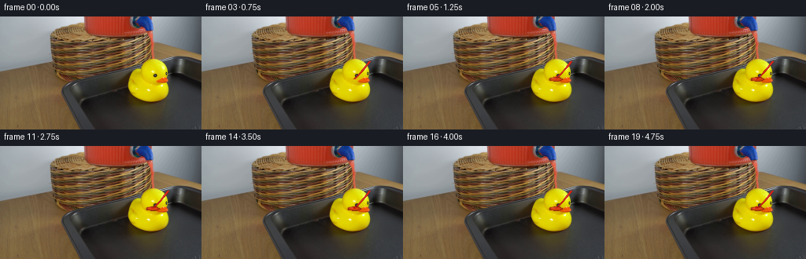
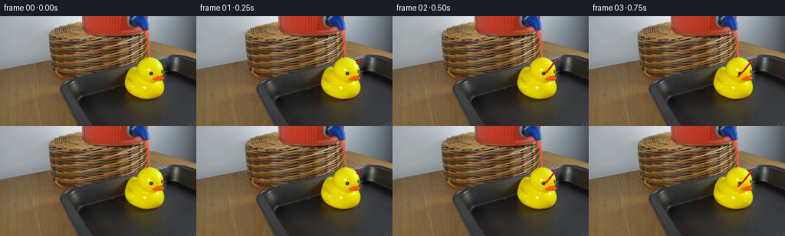
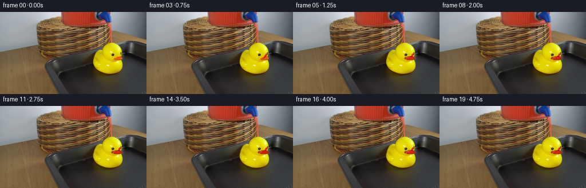
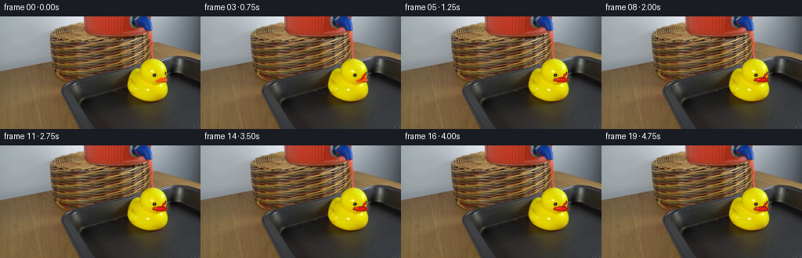

CODING AGENTS AS PIXEL WORLD MODELS
traex/DeepSeek-V4.1-Flash · 0085
点击播放 · 原生 RGB 像素
逐轮保存的候选
回放视频、检查图与代码变化。
每份候选均可单独播放。实际图片检查记录在下方工具轨迹中。
候选 01播放与检查图
点击播放 · 原生 RGB 像素


展开代码变化
--- 上一保存版本
+++ 本次保存版本
@@ -0,0 +1,228 @@
+from pathlib import Path
+
+import numpy as np
+from PIL import Image
+
+import artifact_io
+
+
+CASE_DIR = Path(__file__).resolve().parent
+WIDTH, HEIGHT = 256, 144
+FRAME_COUNT, FPS = 20, 4
+
+
+def smoothstep(edge0, edge1, values):
+ t = np.clip((values - edge0) / (edge1 - edge0), 0.0, 1.0)
+ return t * t * (3.0 - 2.0 * t)
+
+
+def composite(image, color, alpha):
+ color = np.asarray(color, dtype=np.float32)
+ a = np.clip(alpha, 0.0, 1.0)[..., None]
+ return image * (1.0 - a) + color * a
+
+
+def ellipse_mask(x, y, cx, cy, rx, ry):
+ return np.sqrt(((x - cx) / rx) ** 2 + ((y - cy) / ry) ** 2)
+
+
+def stream_progress(t):
+ if t < 0.18:
+ return 0.0
+ if t < 0.38:
+ return 0.08 + 0.42 * smoothstep(0.18, 0.38, t)
+ if t < 0.66:
+ return 0.50 + 0.50 * smoothstep(0.38, 0.66, t)
+ return 1.0
+
+
+def draw_stream(image, x, y, t, progress):
+ if progress <= 0.0:
+ return image
+
+ x0, y0 = 214.0, 57.0
+ x1, y1 = 194.2, 80.2
+ y_end = y0 + (y1 - y0) * progress
+
+ span = max(y1 - y0, 1e-4)
+ u = np.clip((y - y0) / span, 0.0, 1.0)
+ phase = 5.7 * t
+ center = (
+ x0
+ + (x1 - x0) * u
+ + 0.72 * np.sin(np.pi * u)
+ + 0.30 * np.sin(2.7 * np.pi * u - phase) * (0.25 + 0.75 * u)
+ )
+ half_width = 1.85 - 0.38 * u + 0.16 * np.sin(3.2 * np.pi * u + phase * 0.8)
+ half_width *= 1.0 + 0.055 * np.sin(13.0 * u - phase)
+
+ side = np.abs(x - center) / np.maximum(half_width, 0.35)
+ body = 1.0 - smoothstep(0.68, 1.12, side)
+ top = smoothstep(y0 - 0.9, y0 + 0.8, y)
+ front = 1.0 - smoothstep(y_end - 1.15, y_end + 0.65, y)
+ alpha = body * top * front * 0.965
+
+ edge_mix = smoothstep(0.22, 1.06, side)
+ deep = np.array([132, 7, 5], dtype=np.float32)
+ bright = np.array([223, 29, 18], dtype=np.float32)
+ fluid_color = bright[None, None, :] * (1.0 - edge_mix[..., None])
+ fluid_color += deep[None, None, :] * edge_mix[..., None]
+ fluid_color *= (0.90 + 0.10 * (1.0 - u[..., None]))
+ image = composite(image, fluid_color, alpha)
+
+ highlight_x = center - 0.34 * half_width
+ highlight_sigma = np.maximum(0.25, half_width * 0.25)
+ highlight = np.exp(-0.5 * ((x - highlight_x) / highlight_sigma) ** 2)
+ highlight *= body * top * front
+ highlight *= 0.42 + 0.14 * np.sin(8.5 * u - phase * 1.7)
+ image = composite(image, [255, 126, 101], highlight * 0.62)
+
+ rim_x = center + 0.64 * half_width
+ rim = np.exp(-0.5 * ((x - rim_x) / np.maximum(0.22, half_width * 0.18)) ** 2)
+ image = composite(image, [255, 66, 38], rim * body * top * front * 0.28)
+
+ if progress < 0.995:
+ front_x = (
+ x0
+ + (x1 - x0) * progress
+ + 0.72 * np.sin(np.pi * progress)
+ + 0.30 * np.sin(2.7 * np.pi * progress - phase) * (0.25 + 0.75 * progress)
+ )
+ r = 1.45 + 0.55 * (1.0 - progress)
+ bead = 1.0 - smoothstep(r - 0.55, r + 0.55, np.hypot(x - front_x, y - y_end))
+ image = composite(image, [205, 18, 11], bead * 0.96)
+ glint = np.exp(-0.5 * (((x - front_x + 0.35 * r) / 0.30) ** 2 + ((y - y_end + 0.30 * r) / 0.34) ** 2))
+ image = composite(image, [255, 146, 122], glint * bead * 0.70)
+
+ return image
+
+
+def draw_wet_impact(image, x, y, t, progress):
+ if progress < 0.93:
+ return image
+
+ cx, cy = 194.2, 80.0
+ wet = smoothstep(0.66, 1.35, t)
+ if wet <= 0.0:
+ return image
+
+ theta = np.arctan2((y - cy) / 2.8, (x - cx) / 8.9)
+ boundary = 1.0 + 0.060 * np.sin(5.0 * theta + 0.8) + 0.030 * np.sin(9.0 * theta - 2.1)
+ q = ellipse_mask(x, y, cx, cy, 8.9, 2.85) / boundary
+ patch = 1.0 - smoothstep(0.93, 1.06, q)
+
+ sheen_q = ellipse_mask(x, y, cx, cy, 10.6, 3.7)
+ sheen = (1.0 - smoothstep(0.84, 1.08, sheen_q)) * 0.16
+ image = composite(image, [118, 8, 5], sheen * wet)
+
+ patch_edge = np.exp(-0.5 * ((q - 0.91) / 0.095) ** 2)
+ patch_color = np.empty((HEIGHT, WIDTH, 3), dtype=np.float32)
+ patch_color[...] = np.array([181, 20, 12], dtype=np.float32)
+ patch_color += (np.clip(1.0 - q, 0.0, 1.0) ** 0.7)[..., None] * np.array([33, 8, 4], dtype=np.float32)
+ patch_color *= (1.0 - 0.45 * patch_edge[..., None])
+ image = composite(image, patch_color, patch * wet * 0.76)
+
+ highlight = np.exp(
+ -0.5
+ * (
+ ((x - (cx - 2.1 - 0.5 * np.sin(2.2 * t))) / 3.7) ** 2
+ + ((y - (cy - 0.85 + 0.16 * np.sin(3.0 * t))) / 0.42) ** 2
+ )
+ )
+ image = composite(image, [255, 105, 82], highlight * patch * wet * 0.68)
+
+ surface = 1.0 - smoothstep(0.88, 1.08, ellipse_mask(x, y, 186.5, 81.0, 25.0, 5.6))
+ for ring_index in range(3):
+ birth = 0.68 + 0.15 * ring_index
+ if t < birth:
+ continue
+ age = (t - birth) % 0.72
+ life = 1.0 - age / 0.72
+ radius = 2.5 + 12.0 * (age / 0.72)
+ rq = ellipse_mask(x, y, cx, cy, radius, radius * 0.255)
+ ring = np.exp(-0.5 * ((rq - 1.0) / 0.075) ** 2)
+ ring *= surface * life * life * 0.48
+ image = composite(image, [255, 69, 47], ring)
+
+ crown_phase = (t * 4.3) % 1.0
+ crown_x = cx + 0.8 * np.sin(t * 13.0)
+ crown_y = cy - 1.9 - 1.5 * crown_phase
+ crown = 1.0 - smoothstep(0.55, 1.25, np.hypot((x - crown_x) / 0.75, (y - crown_y) / 1.8))
+ image = composite(image, [229, 44, 27], crown * wet * (1.0 - crown_phase) * 0.72)
+
+ return image
+
+
+def build_droplets():
+ rng = np.random.default_rng(84521)
+ events = []
+ for event_time in np.arange(0.74, 5.2, 0.30):
+ drops = []
+ for _ in range(7):
+ drops.append(
+ {
+ "vx": float(rng.uniform(-20.0, 20.0)),
+ "vy": float(rng.uniform(-34.0, -9.0)),
+ "life": float(rng.uniform(0.20, 0.35)),
+ "radius": float(rng.uniform(0.48, 1.18)),
+ "delay": float(rng.uniform(0.0, 0.055)),
+ }
+ )
+ events.append((float(event_time), drops))
+ return events
+
+
+DROPLET_EVENTS = build_droplets()
+
+
+def draw_splash(image, x, y, t):
+ cx, cy = 194.2, 79.7
+ gravity = 88.0
+ for event_time, drops in DROPLET_EVENTS:
+ for drop in drops:
+ age = t - event_time - drop["delay"]
+ if age <= 0.0 or age >= drop["life"]:
+ continue
+ px = cx + drop["vx"] * age
+ py = cy + drop["vy"] * age + 0.5 * gravity * age * age
+ r = drop["radius"] * (0.72 + 0.28 * (1.0 - age / drop["life"]))
+ distance = np.hypot(x - px, y - py)
+ body = 1.0 - smoothstep(r - 0.50, r + 0.50, distance)
+ fade = (1.0 - age / drop["life"]) ** 0.55
+ image = composite(image, [191, 17, 10], body * fade * 0.92)
+ glint = np.exp(-0.5 * (((x - px + 0.28 * r) / 0.27) ** 2 + ((y - py + 0.24 * r) / 0.28) ** 2))
+ image = composite(image, [255, 121, 98], glint * body * fade * 0.58)
+ return image
+
+
+def render_frame(base, index):
+ if index == 0:
+ return base.copy()
+
+ t = index / FPS
+ x_grid, y_grid = np.meshgrid(np.arange(WIDTH, dtype=np.float32) + 0.5, np.arange(HEIGHT, dtype=np.float32) + 0.5)
+ image = base.astype(np.float32)
+
+ progress = stream_progress(t)
+ image = draw_stream(image, x_grid, y_grid, t, progress)
+ image = draw_wet_impact(image, x_grid, y_grid, t, progress)
+ image = draw_splash(image, x_grid, y_grid, t)
+
+ return np.clip(np.rint(image), 0, 255).astype(np.uint8)
+
+
+def main():
+ source = np.asarray(Image.open(CASE_DIR / "first_frame.png").convert("RGB"), dtype=np.uint8)
+ assert source.shape == (HEIGHT, WIDTH, 3)
+
+ frames = np.empty((FRAME_COUNT, HEIGHT, WIDTH, 3), dtype=np.uint8)
+ frames[0] = source
+ for index in range(1, FRAME_COUNT):
+ frames[index] = render_frame(source, index)
+
+ assert np.array_equal(frames[0], source)
+ artifact_io.save(frames, CASE_DIR)
+
+
+if __name__ == "__main__":
+ main()
候选 02播放与检查图
点击播放 · 原生 RGB 像素

展开代码变化
--- 上一保存版本
+++ 本次保存版本
@@ -40,8 +40,8 @@
if progress <= 0.0:
return image
- x0, y0 = 214.0, 57.0
- x1, y1 = 194.2, 80.2
+ x0, y0 = 210.3, 73.0
+ x1, y1 = 203.8, 82.0
y_end = y0 + (y1 - y0) * progress
span = max(y1 - y0, 1e-4)
@@ -53,7 +53,7 @@
+ 0.72 * np.sin(np.pi * u)
+ 0.30 * np.sin(2.7 * np.pi * u - phase) * (0.25 + 0.75 * u)
)
- half_width = 1.85 - 0.38 * u + 0.16 * np.sin(3.2 * np.pi * u + phase * 0.8)
+ half_width = 2.05 - 0.30 * u + 0.14 * np.sin(3.2 * np.pi * u + phase * 0.8)
half_width *= 1.0 + 0.055 * np.sin(13.0 * u - phase)
side = np.abs(x - center) / np.maximum(half_width, 0.35)
@@ -101,17 +101,17 @@
if progress < 0.93:
return image
- cx, cy = 194.2, 80.0
+ cx, cy = 203.8, 81.2
wet = smoothstep(0.66, 1.35, t)
if wet <= 0.0:
return image
theta = np.arctan2((y - cy) / 2.8, (x - cx) / 8.9)
boundary = 1.0 + 0.060 * np.sin(5.0 * theta + 0.8) + 0.030 * np.sin(9.0 * theta - 2.1)
- q = ellipse_mask(x, y, cx, cy, 8.9, 2.85) / boundary
+ q = ellipse_mask(x, y, cx, cy, 9.4, 3.05) / boundary
patch = 1.0 - smoothstep(0.93, 1.06, q)
- sheen_q = ellipse_mask(x, y, cx, cy, 10.6, 3.7)
+ sheen_q = ellipse_mask(x, y, cx, cy, 11.0, 3.85)
sheen = (1.0 - smoothstep(0.84, 1.08, sheen_q)) * 0.16
image = composite(image, [118, 8, 5], sheen * wet)
@@ -131,7 +131,7 @@
)
image = composite(image, [255, 105, 82], highlight * patch * wet * 0.68)
- surface = 1.0 - smoothstep(0.88, 1.08, ellipse_mask(x, y, 186.5, 81.0, 25.0, 5.6))
+ surface = 1.0 - smoothstep(0.88, 1.08, ellipse_mask(x, y, 196.0, 82.0, 25.0, 5.8))
for ring_index in range(3):
birth = 0.68 + 0.15 * ring_index
if t < birth:
@@ -176,7 +176,7 @@
def draw_splash(image, x, y, t):
- cx, cy = 194.2, 79.7
+ cx, cy = 203.8, 81.4
gravity = 88.0
for event_time, drops in DROPLET_EVENTS:
for drop in drops:
候选 03播放与检查图
点击播放 · 原生 RGB 像素

展开代码变化
--- 上一保存版本
+++ 本次保存版本
@@ -63,8 +63,8 @@
alpha = body * top * front * 0.965
edge_mix = smoothstep(0.22, 1.06, side)
- deep = np.array([132, 7, 5], dtype=np.float32)
- bright = np.array([223, 29, 18], dtype=np.float32)
+ deep = np.array([119, 4, 3], dtype=np.float32)
+ bright = np.array([232, 24, 15], dtype=np.float32)
fluid_color = bright[None, None, :] * (1.0 - edge_mix[..., None])
fluid_color += deep[None, None, :] * edge_mix[..., None]
fluid_color *= (0.90 + 0.10 * (1.0 - u[..., None]))
@@ -113,14 +113,14 @@
sheen_q = ellipse_mask(x, y, cx, cy, 11.0, 3.85)
sheen = (1.0 - smoothstep(0.84, 1.08, sheen_q)) * 0.16
- image = composite(image, [118, 8, 5], sheen * wet)
+ image = composite(image, [101, 4, 2], sheen * wet)
patch_edge = np.exp(-0.5 * ((q - 0.91) / 0.095) ** 2)
patch_color = np.empty((HEIGHT, WIDTH, 3), dtype=np.float32)
- patch_color[...] = np.array([181, 20, 12], dtype=np.float32)
- patch_color += (np.clip(1.0 - q, 0.0, 1.0) ** 0.7)[..., None] * np.array([33, 8, 4], dtype=np.float32)
+ patch_color[...] = np.array([192, 15, 9], dtype=np.float32)
+ patch_color += (np.clip(1.0 - q, 0.0, 1.0) ** 0.7)[..., None] * np.array([35, 6, 3], dtype=np.float32)
patch_color *= (1.0 - 0.45 * patch_edge[..., None])
- image = composite(image, patch_color, patch * wet * 0.76)
+ image = composite(image, patch_color, patch * wet * 0.82)
highlight = np.exp(
-0.5
@@ -129,7 +129,7 @@
+ ((y - (cy - 0.85 + 0.16 * np.sin(3.0 * t))) / 0.42) ** 2
)
)
- image = composite(image, [255, 105, 82], highlight * patch * wet * 0.68)
+ image = composite(image, [255, 93, 69], highlight * patch * wet * 0.74)
surface = 1.0 - smoothstep(0.88, 1.08, ellipse_mask(x, y, 196.0, 82.0, 25.0, 5.8))
for ring_index in range(3):
可观测工具轨迹
实际执行的命令与返回图片。
命令 1exit 0
/bin/bash -c "pwd && rg --files -g '"'!*.mp4'"' -g '"'!*.mov'"' -g '"'!*.avi'"' | sort"
命令 2exit 0
/bin/bash -c "sed -n '1,240p' prompt.txt"
命令 3exit 0
/bin/bash -c "sed -n '1,280p' GENERATION_RULES.md"
命令 4exit 0
/bin/bash -c 'ls -la && file first_frame.png && identify first_frame.png 2>/dev/null || true && ffprobe -v error -show_entries stream=width,height,pix_fmt -of default=nw=1 first_frame.png 2>/dev/null || true'
命令 5exit 0
/bin/bash -c "python - <<'PY'
from PIL import Image
import numpy as np
im=Image.open('first_frame.png').convert('RGB')
a=np.array(im)
print(im.size, a.shape, a.dtype)
print('min',a.min((0,1)),'max',a.max((0,1)),'mean',a.mean((0,1)))
# exact colors most frequent
cols,counts=np.unique(a.reshape(-1,3),axis=0,return_counts=True)
idx=np.argsort(counts)[-20:][::-1]
for i in idx: print(tuple(cols[i]),int(counts[i]))
PY"命令 6exit 0
/bin/bash -c "python - <<'PY'
from PIL import Image
import numpy as np, colorsys
im=np.array(Image.open('first_frame.png').convert('RGB'))
h,w,_=im.shape
# classify pixels by simple conditions
r,g,b=im[:,:,0].astype(int),im[:,:,1].astype(int),im[:,:,2].astype(int)
yellow=(r>150)&(g>130)&(b<90)&(r-b>90)&(g-b>70)
red=(r>90)&(r>g*1.35)&(r>b*1.35)&(g<100)
brown=(r>50)&(r>g*1.15)&(g>b*1.1)&(b<90)&~yellow&~red
metal=(np.abs(r-g)<18)&(np.abs(g-b)<20)&(r>60)&(r<210)
bright=(r+g+b>600)
dark=(r+g+b<120)
for name,m in [('yellow',yellow),('red',red),('brown',brown),('metal',metal),('bright',bright),('dark',dark)]:
ys,xs=np.where(m)
print(name,'n',m.sum(),'bbox', (xs.min(),ys.min(),xs.max(),ys.max()) if len(xs) else None,'centroid',(xs.mean(),ys.mean()) if len(xs) else None)
# downsample class map
chars=' .:-=+*#%@'
gray=im.mean(2)
for y in range(0,h,4):
line=''
for x in range(0,w,4):
block=im[y:y+4,x:x+4]
rr,gg,bb=block.mean((0,1))
if yellow[y:y+4,x:x+4].mean()>.25: c='Y'
elif red[y:y+4,x:x+4].mean()>.25: c='R'
elif brown[y:y+4,x:x+4].mean()>.45 and rr>80: c='B'
elif bright[y:y+4,x:x+4].mean()>.3: c='O'
elif dark[y:y+4,x:x+4].mean()>.5: c='X'
else:
v=gray[y:y+4,x:x+4].mean(); c=chars[min(9,int(v/256*10))]
line+=c
print(f'{y:03d} '+line)
PY"命令 7exit 0
/bin/bash -c "python - <<'PY'
try:
import cv2; print('cv2',cv2.__version__)
except Exception as e: print('no cv2',e)
try:
import scipy; print('scipy',scipy.__version__)
except Exception as e: print('no scipy',e)
PY"命令 8exit 0
/bin/bash -c "python - <<'PY'
from PIL import Image
import numpy as np
from sklearn.cluster import KMeans
im=np.array(Image.open('first_frame.png').convert('RGB'))
a=im.reshape(-1,3)
km=KMeans(8, random_state=1,n_init=3).fit(a[::4])
c=km.cluster_centers_.astype(int)
for i,col in enumerate(c):
m=km.labels_==i
print(i,tuple(col),m.sum(),m.mean())
PY"命令 9exit 0
/bin/bash -c "python - <<'PY'
from PIL import Image
import numpy as np
from sklearn.cluster import KMeans
im=np.array(Image.open('first_frame.png').convert('RGB'))
h,w,_=im.shape
# 10 semantic clusters in Lab-ish RGB
km=KMeans(10, random_state=4,n_init=5).fit(im.reshape(-1,3)[::2])
c=km.cluster_centers_.astype(int)
print('centers')
for i,col in enumerate(c): print(i,tuple(col))
# assign full nearest cluster
flat=im.reshape(-1,3).astype(float)
# label via nearest center
d=((flat[:,None,:]-c[None,:,:])**2).sum(2)
lab=d.argmin(1).reshape(h,w)
# custom char cluster by brightness/color
chars='0123456789'
for y in range(0,h,3):
line=''
for x in range(0,w,2):
block=lab[y:y+3,x:x+2]
vals,cts=np.unique(block,return_counts=True)
line+=chars[vals[np.argmax(cts)]]
print(f'{y:03d} '+line)
PY"命令 10exit 0
/bin/bash -c "sed -n '1,260p' artifact_io.py"
命令 11exit 0
/bin/bash -c "python - <<'PY'
from PIL import Image
import numpy as np
im=np.array(Image.open('first_frame.png').convert('RGB'))
# Print RGB rows at sample coords to understand geometry
for y in [0,10,20,30,35,40,45,50,55,60,65,70,75,80,85,90,100,110,120,130,140]:
print('y',y)
for x in range(0,256,16):
print(f'{x:3d}:{tuple(im[y,x])}',end=' ')
print()
PY"命令 12exit 0
/bin/bash -c "python - <<'PY'
from PIL import Image
import numpy as np
im=np.array(Image.open('first_frame.png').convert('RGB')).astype(int)
# map categories from hand-tuned HSV
import cv2
hsv=cv2.cvtColor(im.astype(np.uint8),cv2.COLOR_RGB2HSV)
H,S,V=[hsv[:,:,i] for i in range(3)]
cats=np.full(H.shape,' ',dtype='<U1')
cats[(S<45)&(V>120)]='g' # gray bright
cats[(S<65)&(V<85)]='d' # dark
cats[(S>70)&(H<12)&(V>70)]='R' # red
cats[(S>90)&(H>=12)&(H<32)&(V>110)]='Y' # yellow/orange
cats[(S>55)&(H>=8)&(H<30)&(V>70)]='w' # brown/gold
cats[(S<45)&(V<=120)&(V>50)]='m'
# use priority manually based hsv
for y in range(0,144,2):
line=''
for x in range(0,256,2):
b=cats[y:y+2,x:x+2]
vals,cts=np.unique(b,return_counts=True)
line+=vals[np.argmax(cts)]
print(f'{y:03d} '+line)
PY"命令 13exit 0
/bin/bash -c "python - <<'PY'
from PIL import Image
import numpy as np, cv2
im=np.array(Image.open('first_frame.png').convert('RGB'))
hsv=cv2.cvtColor(im,cv2.COLOR_RGB2HSV)
H,S,V=cv2.split(hsv)
masks={
'yellow': ((H>=18)&(H<=40)&(S>130)&(V>150)),
'red': (((H<10)|(H>170))&(S>110)&(V>70)),
'brown': ((H>=8)&(H<30)&(S>60)&(V>50)&(V<190)),
'graybright': ((S<35)&(V>120)),
'graydark': ((S<55)&(V<100)),
}
for name,m in masks.items():
m=(m.astype(np.uint8)*255)
n,l,stats,cents=cv2.connectedComponentsWithStats(m,8)
print('\\n',name)
for i in sorted(range(1,n),key=lambda i:stats[i,cv2.CC_STAT_AREA],reverse=True)[:12]:
x,y,w,h,area=stats[i]
print(' area',area,'bbox',(x,y,w,h),'cent',tuple(np.round(cents[i],1)))
PY"命令 14exit 0
/bin/bash -c "python - <<'PY'
from PIL import Image
import numpy as np
im=np.array(Image.open('first_frame.png').convert('RGB'))
# print selected vertical color runs and row boundaries
for x in [60,70,80,90,100,110,120,130,140,150,160,170,180,190,200,210,220]:
print('\\nx',x)
for y in range(0,144,4):
p=im[y,x]
print(f'{y:3d}:{p[0]:3d},{p[1]:3d},{p[2]:3d}',end=' ')
print()
PY"命令 15exit 0
/bin/bash -c "python - <<'PY'
from PIL import Image
import numpy as np, cv2
im=np.array(Image.open('first_frame.png').convert('RGB'))
hsv=cv2.cvtColor(im,cv2.COLOR_RGB2HSV); H,S,V=cv2.split(hsv)
red=((H<12)|(H>172))&(S>100)&(V>55)
yellow=(H>=17)&(H<=40)&(S>120)&(V>140)
for name,m in [('RED',red),('YEL',yellow)]:
print('\\n'+name)
for y in range(0,144,2):
xs=np.where(m[y] | m[min(y+1,143)])[0]
if len(xs):
# contiguous runs len>=2
runs=[]; st=pr=xs[0]
for x in xs[1:]:
if x>pr+1:
if pr-st+1>=2:runs.append((st,pr))
st=x
pr=x
if pr-st+1>=2:runs.append((st,pr))
if runs: print(f'{y:3d}: '+' '.join(f'{a}-{b}' for a,b in runs))
PY"命令 16exit 0
/bin/bash -c "python - <<'PY'
from PIL import Image
import numpy as np, cv2
im=np.array(Image.open('first_frame.png').convert('RGB'))
hsv=cv2.cvtColor(im,cv2.COLOR_RGB2HSV); H,S,V=cv2.split(hsv)
# inspect around duck in detail with nearest named colors, 1 char per pixel downsample 2x2
for y in range(30,116,2):
line=''
for x in range(140,226,2):
h,s,v=hsv[y:y+2,x:x+2].reshape(-1,3).mean(0)
r,g,b=im[y:y+2,x:x+2].reshape(-1,3).mean(0)
if r>180 and g>150 and b<70 and s>120: c='Y'
elif r>200 and g>70 and b<50: c='O'
elif r<30 and g<30 and b<30: c='X'
elif v>100 and s<70: c='.'
elif r>110 and g>75 and b<70 and r>g*1.2: c='w'
elif v<65: c='d'
elif v<100: c='m'
else:c=' '
line+=c
print(f'{y:03d} '+line)
PY"命令 17exit 0
/bin/bash -c "python - <<'PY'
from PIL import Image
import numpy as np
im=np.array(Image.open('first_frame.png').convert('RGB'))
# exact silhouette from color map to estimate duck shape and center
r,g,b=im[:,:,0].astype(int),im[:,:,1].astype(int),im[:,:,2].astype(int)
m=(r>140)&(g>100)&(b<90)&(r-g>20)&(g-b>60)
for y in range(45,112):
xs=np.where(m[y])[0]
if len(xs):
# only central duck x>155
xs=xs[(xs>155)&(xs<220)]
if len(xs): print(y,xs.min(),xs.max())
PY"命令 18exit 0
/bin/bash -c "python - <<'PY'
from PIL import Image
import numpy as np, cv2
im=np.array(Image.open('first_frame.png').convert('RGB'))
hsv=cv2.cvtColor(im,cv2.COLOR_RGB2HSV); H,S,V=cv2.split(hsv)
# use masks and find likely straight lines (Canny + Hough)
gray=cv2.cvtColor(im,cv2.COLOR_RGB2GRAY)
edges=cv2.Canny(gray,40,100)
lines=cv2.HoughLinesP(edges,1,np.pi/180,threshold=20,minLineLength=20,maxLineGap=3)
for l in sorted(lines[:,0], key=lambda q:-(q[2]-q[0])**2-(q[3]-q[1])**2)[:50]:
x1,y1,x2,y2=l; print((x1,y1,x2,y2),'len',round(np.hypot(x2-x1,y2-y1),1),'ang',round(np.degrees(np.arctan2(y2-y1,x2-x1)),1))
PY"命令 19exit 0
/bin/bash -c "python - <<'PY'
from PIL import Image
import numpy as np
im=np.array(Image.open('first_frame.png').convert('RGB'))
# classify liquid red presence row by row, excluding background right and small flecks
r,g,b=[im[:,:,i].astype(int) for i in range(3)]
red=(r>g*1.35)&(r>b*1.35)&(r>95)&(g<110)
for y in range(144):
n=red[y].sum()
if y%2==0: print(f'{y:03d} {n:3d} '+('#'*min(n,60)))
PY"命令 20exit 0
/bin/bash -c "python - <<'PY'
from PIL import Image
import numpy as np
im=np.array(Image.open('first_frame.png').convert('RGB'))
r,g,b=[im[:,:,i].astype(int) for i in range(3)]
red=(r>g*1.35)&(r>b*1.35)&(r>95)&(g<110)
# runs rows 0..84, minimum 3
for y in range(0,88,2):
xs=np.where(red[y] | red[y+1])[0]
runs=[]
if len(xs):
st=pr=xs[0]
for x in xs[1:]:
if x>pr+1:
if pr-st+1>=3:runs.append((st,pr))
st=x
pr=x
if pr-st+1>=3:runs.append((st,pr))
if runs: print(f'{y:03d}:',runs)
PY"命令 21exit 0
/bin/bash -c "python - <<'PY'
from PIL import Image
import numpy as np
im=np.array(Image.open('first_frame.png').convert('RGB'))
# sample red reservoir rows boundaries with masks
for y in [0,5,10,15,20,23,24,25,26,28,30]:
r=im[y,:,0].astype(int);g=im[y,:,1].astype(int);b=im[y,:,2].astype(int)
m=(r>110)&(r>g*1.25)&(r>b*1.25)&(g<115)
xs=np.where(m)[0]
print(y, (xs.min(),xs.max()) if len(xs) else None)
# colors every 8
print(' ',[(x,tuple(im[y,x])) for x in range(96,201,8)])
PY"命令 22exit 0
/bin/bash -c "python - <<'PY'
from PIL import Image
import numpy as np, cv2
im=np.array(Image.open('first_frame.png').convert('RGB'))
# Fine ASCII around likely tap and duck top, x170-220 y35-95
hsv=cv2.cvtColor(im,cv2.COLOR_RGB2HSV); H,S,V=cv2.split(hsv)
for y in range(30,100):
line=''
for x in range(160,226):
h,s,v=H[y,x],S[y,x],V[y,x]; r,g,b=im[y,x]
if r>150 and g>120 and b<80: c='Y'
elif r>130 and r>g*1.45 and r>b*1.45: c='R'
elif v>175 and s<75: c='O' # bright glass
elif v>110 and s<85: c='o'
elif v>85 and s<120: c='.'
elif v>60 and s<130: c=':'
elif v>40: c=','
else: c=' '
line+=c
print(f'{y:03d} '+line)
PY"命令 23exit 0
/bin/bash -c "python - <<'PY'
from PIL import Image
import numpy as np
im=np.array(Image.open('first_frame.png').convert('RGB')).astype(float)
# Determine red object ROI and edge gradient. Use red dominance threshold, print edge x at every row
r,g,b=[im[:,:,i] for i in range(3)]
red=(r>100)&(r>g*1.3)&(r>b*1.3)
for y in range(0,60):
xs=np.where(red[y,90:205])[0]+90
if len(xs)>10: print(y, xs.min(),xs.max())
PY"命令 24exit 0
/bin/bash -c "python - <<'PY'
from PIL import Image
import numpy as np, cv2
im=np.array(Image.open('first_frame.png').convert('RGB'))
# create edge map for display via ASCII x160:220 y35:90, edge strengths
gray=cv2.cvtColor(im,cv2.COLOR_RGB2GRAY).astype(float)
gx=cv2.Sobel(gray,cv2.CV_64F,1,0,ksize=3); gy=cv2.Sobel(gray,cv2.CV_64F,0,1,ksize=3)
mag=np.hypot(gx,gy)
for y in range(35,95):
line=''
for x in range(160,226):
v=mag[y,x]
line += ' ' if v<30 else '.' if v<80 else ':' if v<160 else '+' if v<300 else '#' if v<500 else '@'
print(f'{y:03d} '+line)
PY"命令 25exit 0
/bin/bash -c "python - <<'PY'
from PIL import Image
import numpy as np
im=np.array(Image.open('first_frame.png').convert('RGB'))
# red mask around tap x195:205 rows 40-85
r,g,b=[im[:,:,i].astype(int) for i in range(3)]
red=(r>g*1.25)&(r>b*1.25)&(r>80)
for y in range(35,90):
xs=np.where(red[y,195:210])[0]+195
print(y, xs.tolist())
PY"命令 26exit 0
/bin/bash -c "python - <<'PY'
from PIL import Image
import numpy as np
im=np.array(Image.open('first_frame.png').convert('RGB'))
for y in range(45,85):
print(f'{y:03d}',[(x,tuple(im[y,x])) for x in range(202,216)])
PY"命令 27exit 0
/bin/bash -c "python - <<'PY'
from PIL import Image
import numpy as np
im=np.array(Image.open('first_frame.png').convert('RGB'))
# save zoom of top region for local numeric inspection later
Image.fromarray(im[0:110,60:225]).resize((660,440)).save('.tmp/top_zoom.png')
# estimate image edges of dispenser body with canny
import cv2
g=cv2.cvtColor(im,cv2.COLOR_RGB2GRAY)
e=cv2.Canny(g,50,120)
for y in range(0,90,5):
xs=np.where(e[y])[0]
print(y,xs.tolist())
PY"命令 28exit 0
/bin/bash -c "python - <<'PY'
from PIL import Image
import numpy as np
from sklearn.cluster import KMeans
im=np.array(Image.open('first_frame.png').convert('RGB'))
# palette sample every pixel downsample maybe Kmeans 14
X=im.reshape(-1,3)[::2]
km=KMeans(14,random_state=3,n_init=5).fit(X)
c=km.cluster_centers_.astype(int)
# sort by hue approx, assign symbols
import cv2
hsv=cv2.cvtColor(c.reshape(1,-1,3).astype(np.uint8),cv2.COLOR_RGB2HSV)[0]
order=sorted(range(14),key=lambda i:(int(hsv[i,0]),int(hsv[i,1]),int(hsv[i,2])))
syms='0123456789ABCD'
mp={i:syms[j] for j,i in enumerate(order)}
print('PALETTE')
for i in order: print(mp[i],tuple(c[i]),'HSV',tuple(hsv[i]))
# assign using nearest cluster
D=((im.reshape(-1,3)[:,None,:].astype(int)-c[None,:,:])**2).sum(2)
lab=D.argmin(1).reshape(144,256)
for y in range(0,144,2):
line=''
for x in range(0,256,2):
b=lab[y:y+2,x:x+2]
vals,cts=np.unique(b,return_counts=True)
line+=mp[vals[np.argmax(cts)]]
print(f'{y:03d} '+line)
PY"命令 29exit 0
/bin/bash -c "command -v chafa || command -v viu || command -v jp2 || true; python - <<'PY'
from PIL import Image
im=Image.open('first_frame.png')
print(im.mode,im.size)
PY"命令 30exit 0
/bin/bash -c "python - <<'PY'
from PIL import Image
import numpy as np
im=np.array(Image.open('first_frame.png').convert('RGB'))
# print grayscale-ish values for specific region as ANSI truecolor blocks? use compact rgb per pixel row
# Determine bright dispenser region and tap dark line coordinates via local luminance minima around x205-215 y45-85
Y=(im@np.array([.299,.587,.114]))
for y in range(45,85):
vals=Y[y,205:218]
xs=np.argsort(vals)[:3]+205
print(y,[(int(x),round(vals[x-205],1),tuple(im[y,x])) for x in xs])
PY"命令 31exit 0
/bin/bash -c "python - <<'PY'
from PIL import Image
import numpy as np
im=np.array(Image.open('first_frame.png').convert('RGB')).astype(float)
# print edge profile per row near x195-225 using local max gradient
for y in range(40,90,2):
vals=[]
for x in range(190,226):
vals.append(np.abs(im[y,x]-im[y,x-1]).sum())
inds=np.argsort(vals)[-6:][::-1]+190
print(y, [(int(x),int(vals[x-190])) for x in inds])
PY"命令 32exit 0
/bin/bash -c "python - <<'PY'
from PIL import Image
import numpy as np, cv2
im=np.array(Image.open('first_frame.png').convert('RGB'))
# Examine boundary of yellow duck mask and estimate top surface. mask includes yellow all; exclude cup region.
r,g,b=[im[:,:,i].astype(int) for i in range(3)]
yellow=(r>150)&(g>120)&(b<100)&(r-b>90)&(g-b>70)
# Focus x160-215, find top/bottom per x
for x in range(158,218,2):
ys=np.where(yellow[:,x])[0]
ys=ys[(ys>=45)&(ys<=112)]
if len(ys): print(x,ys.min(),ys.max(),len(ys))
PY"命令 33exit 0
/bin/bash -c "python - <<'PY'
from PIL import Image
import numpy as np
im=np.array(Image.open('first_frame.png').convert('RGB'))
# Save crop thumbnails at 4x using nearest for potential local use
for name,box in {'duck':(145,45,220,115),'spout':(190,40,225,90),'body':(55,0,205,60)}.items():
Image.fromarray(im[box[1]:box[3],box[0]:box[2]]).resize(((box[2]-box[0])*6,(box[3]-box[1])*6),Image.Resampling.NEAREST).save(f'.tmp/{name}_nearest.png')
print(name,box)
PY"命令 34exit 0
/bin/bash -c "python - <<'PY'
from PIL import Image
import numpy as np
im=np.array(Image.open('first_frame.png').convert('RGB'))
# Inspect tap region color transitions at each row in x208:222
for y in range(52,90,2):
print(y, ' '.join(f'{x}:{im[y,x,0]:.0f},{im[y,x,1]:.0f},{im[y,x,2]:.0f}' for x in range(208,222)))
PY"命令 35exit 0
/bin/bash -c "python - <<'PY'
from PIL import Image
import numpy as np, cv2
im=np.array(Image.open('first_frame.png').convert('RGB'))
hsv=cv2.cvtColor(im,cv2.COLOR_RGB2HSV); H,S,V=cv2.split(hsv)
r,g,b=[im[:,:,i].astype(int) for i in range(3)]
for y in range(0,91):
line=''
for x in range(60,226):
h,s,v=H[y,x],S[y,x],V[y,x]
if r[y,x]>110 and r[y,x]>g[y,x]*1.45 and r[y,x]>b[y,x]*1.45: c='R'
elif r[y,x]>170 and g[y,x]>135 and b[y,x]<90: c='Y'
elif v>215 and s<45: c='O'
elif v>160 and s<75: c='o'
elif v>110 and s<100: c='+'
elif v>75 and s<125: c='-'
elif v>55: c='.'
else: c=' '
line+=c
print(f'{y:03d} '+line)
PY"命令 36exit 0
/bin/bash -c "python - <<'PY'
from PIL import Image
import numpy as np
im=np.array(Image.open('first_frame.png').convert('RGB')).astype(float)
# determine color profile around vertical black tap stem x214-220 y55-90
for x in range(212,222):
vals=[]
for y in range(52,92):
vals.append(int(im[y,x].sum()))
print(x, ' '.join(f'{v//3:3d}' for v in vals))
PY"命令 37exit 0
/bin/bash -c "python - <<'PY'
from PIL import Image
import numpy as np, cv2
im=np.array(Image.open('first_frame.png').convert('RGB'))
# color samples of duck region, kmeans 6
from sklearn.cluster import KMeans
X=im[50:110,160:216].reshape(-1,3)
km=KMeans(6,random_state=0,n_init=5).fit(X)
for c in km.cluster_centers_.astype(int): print(tuple(c), (km.labels_==np.argmin(((c-km.cluster_centers_)**2).sum(1))).sum())
# find shiny high saturation pixel
Y=im@np.array([.299,.587,.114])
ys,xs=np.where((Y[50:110,160:216]>190)&(im[50:110,160:216,2]<100))
print('bright yellow bbox', (xs.min()+160,ys.min()+50,xs.max()+160,ys.max()+50),len(xs))
PY"命令 38exit 0
/bin/bash -c "python - <<'PY'
from PIL import Image
import numpy as np
im=np.array(Image.open('first_frame.png').convert('RGB'))
# pixel classification to detect cup rim at top right; sample ranges
for y in range(0,30):
r,g,b=[im[y,:,i].astype(int) for i in range(3)]
m=(r>100)&(r>g*1.5)&(r>b*1.5)
xs=np.where(m)[0]
print(y,(xs.min(),xs.max()) if len(xs) else None)
PY"命令 39exit 0
/bin/bash -c "python - <<'PY'
from PIL import Image
import numpy as np
im=np.array(Image.open('first_frame.png').convert('RGB'))
for y in range(0,25):
print(y,[(x,tuple(im[y,x])) for x in range(160,201,4)])
PY"命令 40exit 0
/bin/bash -c 'python generate.py'
命令 41exit 0
/bin/bash -c "python - <<'PY'
from PIL import Image
import numpy as np
for i in [0,1,2,3,4,5,6,7,8,10,12,15,19]:
a=np.array(Image.open(f'frames/{i:02d}.png'))
# diff bbox from first
b=np.array(Image.open('frames/00.png'))
m=np.any(a"'!=b,axis=2)
ys,xs=np.where(m)
print(i,'"'changed',m.sum(),'bbox', (xs.min(),ys.min(),xs.max(),ys.max()) if len(xs) else None, 'mean',a.mean((0,1)).round(2))
PY"命令 42exit 0
/bin/bash -c "python - <<'PY'
from PIL import Image
import numpy as np
base=np.array(Image.open('frames/00.png').convert('RGB')).astype(int)
for i in [1,3,5,10,19]:
im=np.array(Image.open(f'frames/{i:02d}.png').convert('RGB')).astype(int)
print('\\nFRAME',i)
for y in range(52,92):
line=''
for x in range(175,225):
r,g,b=im[y,x]
br,gg,bb=base[y,x]
if np.abs(im[y,x]-base[y,x]).sum()>30: c='R' if r>g*1.3 and r>b*1.3 else '#'
elif r>190 and g>165 and b<100: c='Y'
elif r>130 and r>g*1.3 and r>b*1.3: c='r'
elif r+g+b<180: c='X'
elif r+g+b<300: c='x'
else: c='.'
line+=c
print(f'{y:03d} '+line)
PY"命令 43exit 0
/bin/bash -c "python generate.py && python - <<'PY'
from PIL import Image
import numpy as np
b=np.array(Image.open('frames/00.png'))
for i in [0,1,2,3,5,8,12,19]:
a=np.array(Image.open(f'frames/{i:02d}.png')); m=np.any(a"'!=b,2)
ys,xs=np.where(m)
print(i,m.sum(),(xs.min(),ys.min(),xs.max(),ys.max()) if len(xs) else None)
PY'命令 44exit 0
/bin/bash -c "python - <<'PY'
from PIL import Image
import numpy as np
b=np.array(Image.open('frames/00.png')).astype(int)
for i in [1,3,5,10,19]:
im=np.array(Image.open(f'frames/{i:02d}.png')).astype(int)
print('\\nFRAME',i)
for y in range(66,90):
line=''
for x in range(188,220):
if np.abs(im[y,x]-b[y,x]).sum()>15:
r,g,bv=im[y,x]; c='R' if r>g*1.4 and r>bv*1.4 else '#'
else:
r,g,bv=im[y,x]
if r>190 and g>165 and bv<100:c='Y'
elif r+g+bv<180:c='X'
elif r+g+bv<300:c='x'
else:c='.'
line+=c
print(f'{y:03d} '+line)
PY"命令 45exit 0
/bin/bash -c "python generate.py && python - <<'PY'
from PIL import Image
import numpy as np
f=np.array(Image.open('frames/00.png'))
# verify no first-frame mutation and frame count/size
import glob
files=sorted(glob.glob('frames/*.png'))
print('frames',len(files),'shape',f.shape,'exact',np.array_equal(f,np.array(Image.open('first_frame.png').convert('RGB'))))
# per-frame changed pixels and mean diff in active region
for i in [0,1,2,3,5,8,12,16,19]:
a=np.array(Image.open(f'frames/{i:02d}.png')); m=np.any(a"'!=f,2)
print(i,int(m.sum()),float(np.abs(a.astype(int)-f.astype(int)).mean()))
PY'命令 46exit 0
/bin/bash -c "python - <<'PY'
from PIL import Image
import numpy as np
# Report color/position of changed pixels to catch any layering errors.
base=np.array(Image.open('frames/00.png')).astype(int)
for i in [1,3,5,10,19]:
a=np.array(Image.open(f'frames/{i:02d}.png')).astype(int)
d=np.abs(a-base).sum(2)
ys,xs=np.where(d>30)
print('\\n',i,'n',len(xs))
for y in range(72,86):
row=[]
for x in range(188,218):
if d[y,x]>30: row.append((x,tuple(a[y,x]),int(d[y,x])))
if row: print(y,row)
PY"保存候选 3 份；完成命令 46 次；可验证图片返回 0 张。原始 API 响应与完整日志保留在本地。